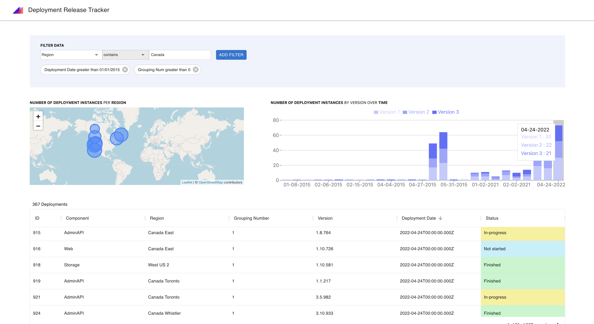

Web app to help Microsoft software engineers and project managers track software deployments within the internal Microsoft Azure system
Use an intuitive widget that will write your complex queries for you
Analyze information about each software deployment in detail
Communicate key data insights and software deployment trends
This team was active from January to June 2022. Contact Gregory Hay if you would like to work on or speak with a sponsor for this project.